전자산업기사 (2010-03-07 기출문제)
1과목: 전자회로
1. 정류기의 직류 출력전압이 무부하일 때 225[V], 전부하시 출력전압이 200[V]일 때 전압변동률[%]은?
- 10[%]
- 12.5[%]
- 20[%]
- 25[%]
(정답률: 91%)

2. 다음 연산증폭기 회로에서 RL에 흐르는 전류가 5[mA]일 때 RL 값은?
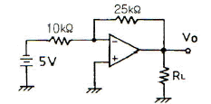
- 2.5[kΩ]
- 4[kΩ]
- 5[kΩ]
- 7.2[kΩ]
(정답률: 84%)
3. RC 결합 증폭기에서 저주파 특성을 제한하는 주 요소로 가장 적합한 것은?
- 극간용량
- 분포용량
- 전류이득
- 입출력 결합용량
(정답률: 76%)
4. 디지털 변조가 아닌 것은?
- PM
- ASK
- FSK
- QAM
(정답률: 88%)
5. 연산증폭기의 전압이득이 100이고 대역폭이 1[MHz]일 때, 다음 회로의 대역폭은 약 몇 [MHz]인가?
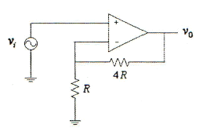
- 0.2[MHz]
- 1[MHz]
- 21[MHz]
- 81[MHz]
(정답률: 58%)
6. 전류증폭률 α가 0.98인 트랜지스터의 α 차단주파수가 100[MHz]일 때, 이 트랜지스터의 β 차단주파수는?
- 2[MHz]
- 20[MHz]
- 98[MHz]
- 100[MHz]
(정답률: 69%)
7. 베이스접지(CD) 증폭회로에 대한 설명으로 적합하지 않은 것은?
- 입력임피던스가 낮다.
- 전류이득은 1보다 훨씬 크다.
- 입력에 대한 출력은 동상이다.
- 높은 주파수를 다루는 응요분야에 주로 사용된다.
(정답률: 76%)
8. 전파 정류 회로의 직류 출력 전력은 반파 정류 회로에 비하여 몇 배인가?
- 2배
- 4배
- 6배
- 8배
(정답률: 62%)
9. 부궤환 증폭기의 특징에 대한 설명으로 틀린 것은?
- 왜곡의 감소
- 잡음의 감소
- 대역폭의 증가
- 안정도의 감소
(정답률: 83%)
10. 다음과 같은 리미터 회로의 출력 파형은? (단, 다이오드의 전압 강하는 0.7[V]이다.)
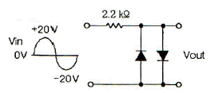
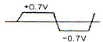
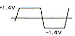
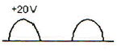
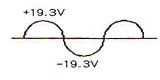
(정답률: 78%)
11. 다음과 같은 JFET 증폭기에서 VDD=10[V], Id=5[mA]일 때 VDS는?
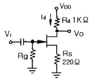
- 2[V]
- 3.9[V]
- 4.5[V]
- 6[V]
(정답률: 70%)
12. 수정발진기의 주파수변동 주요인으로 적합하지 않은 것은?
- 부하의 변동
- 전원전압의 변동
- 주위 온도의 변화
- 트랜지스터의 경년 변화
(정답률: 78%)
13. 연산증폭기의 응용 회로에 속하지 않는 것은?(오류 신고가 접수된 문제입니다. 반드시 정답과 해설을 확인하시기 바랍니다.)
- 위상기
- 가산기
- 계수기
- 적분기
(정답률: 62%)
14. 연산증폭기의 슬루 레이트(slew rate)는 어떤 특성에 크게 영향을 주는가?
- 잡음 특성
- 이득 특성
- 스위칭 특성
- 동상 제거 특성
(정답률: 82%)
15. 이미터 플로어 증폭기에 대한 설명으로 적합하지 않은 것은?
- 전류이득은 크다.
- 전압이득은 1에 가깝다.
- 입력임피던스는 매우 높다.
- 출력은 컬렉터 단자에서 얻는다.
(정답률: 68%)
16. 다음과 같은 연산증폭기에서 출력 전압은?
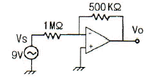
- 0[V]
- -4.5[V]
- 9[V]
- -18[V]
(정답률: 88%)
17. 전파 정류 회로의 입력 주파수가 60[Hz]일 때 출력 주파수는?
- 30[Hz]
- 60[Hz]
- 120[Hz]
- 180[Hz]
(정답률: 67%)
18. 무궤환시 전압이득이 100인 증폭기에서 궤환률 0.09의 부궤환을 걸었을 때, 전압이득은?
- 1
- 9
- 10
- 50
(정답률: 62%)
19. 이미터 접지형 증폭기에서 ICO가 0.1[mA]이고, IB는 0.5[mA]일 때, 컬렉터 전류 IC는? (단, 베이스접지 때 전류증폭률 α는 0.9이다.)
- 4.5[mA]
- 5.0[mA]
- 5.5[mA]
- 45[mA]
(정답률: 58%)
20. 정현파 입력에 의하여 구형파의 출력 파형을 얻는 회로는?
- 적분회로
- 부우스트랩 회로
- 밀러 적분회로
- 슈미트트리거 회로
(정답률: 88%)
2과목: 전기자기학 및 회로이론
21. 패러데이(Faraday)관의 성질로서 옳지 않은 것은?
- 패러데이관 내의 전속수는 일정하다.
- 패러데이관의 양단에는 양ㆍ음의 단위전하가 있다.
- 진전하가 있는 곳에서는 패러데이관은 연속이다.
- 패러데이관의 밀도는 전속밀도와 같다.
(정답률: 60%)
22. 공기 중을 진행하는 평면파가 유리에 수직으로 입사되었을 때 유리를 투과하는 에너지와 입사 에너지와의 비는? (단, 유리의 비유전율은 εr=6이다.)
- 68[%]
- 78[%]
- 82[%]
- 92[%]
(정답률: 59%)
23. 진공 중에 e[C]의 전하가 B[Wb/m2]의 평등 자계내에 자계와 수직방향으로 v[m/s]의 속도로 움직일 때 받는 힘[N]은?
- e v B
- μ0 e v B
- ε0 e v B
- μ ε v B
(정답률: 63%)
24. 완전 진공으로 된 평등 전계내에서 전자가 자유로이 운동하고 있을 때 전하를 e[C], 전자의 질량을 m[kg], 전자가 통과한 곳의 전위차를 V[V]라 할 때 전자의 속도는 약 얼마인가? (단, e는 1.602×10-19 [C], m은 9.107×10-31[kg]이다.)
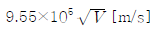
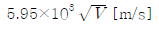
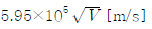
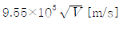
(정답률: 55%)
25. 반경 a[m]되는 도체구의 표면전하밀도가 δ[C/m2]일 때 도체표면의 전위와 전계의 관계는? (단, V는 전위이며, 전계
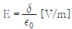
이다.)- V=E·a2
- V=E·a
- V=E/a
- V=E/a2
(정답률: 58%)
26. 100[mH]의 자기 인덕턴스를 가진 코일에 10[A]의 전류를 통할 때, 축적되는 에너지는?
- 1[J]
- 5[J]
- 50[J]
- 1000[J]
(정답률: 58%)
27. 철심에 도선을 250[회] 감고 1.2[A]의 전류를 흘렸더니 1.5×10-3 [Wb]의 자속이 생겼다. 자기저항 [AT/Wb]은?
- 2×105[AT/Wb]
- 3×105[AT/Wb]
- 4×105[AT/Wb]
- 5×105[AT/Wb]
(정답률: 65%)
28. 정전용량 10[μF]인 콘덴서의 양단에 100[V]의 일정 전압을 인가하고 있다. 지금 이 콘덴서의 극판간의 거리를 1/10 로 변화시키면 콘덴서에 충전되는 전하량은 거리를 변화시키기 이전의 전하량에 비해 어떻게 되는가?
- 1/10 로 간소
- 1/100 로 감소
- 10배로 증가
- 100배로 증가
(정답률: 75%)
29. 코일의 권수를 2배로 했을 때의 자기인덕턴스의 값은?
- 변화 없음
- 2배로 증가
- 4배로 증가
- 8배로 증가
(정답률: 73%)
30. 비유전율이 9이고, 비투자율이 1인 매질내의 고유임피던스는 약 몇 [Ω] 인가?
- 42[Ω]
- 84[Ω]
- 126[Ω]
- 377[Ω]
(정답률: 55%)
31. 전류 전원의 내부 저항에 관하여 옳은 것은?
- 클수록 이상적이다.
- 작을수록 이상적이다.
- 경우에 따라 다르다.
- 전류 공급을 받는 회로의 구동점 임피던스와 같아야 한다.
(정답률: 68%)
32. 그림과 같은 T형 회로에서 Z2를 4단자 정수로 표시하면?
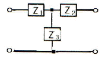
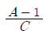
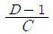
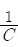
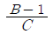
(정답률: 55%)
33. 그림의 회로가 정저항 회로가 되려면 L은 몇 [H]인가?(단, r은 20옴 c는 200 마이크로패럿)
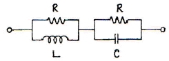
- 0.08
- 0.8
- 1
- 10
(정답률: 59%)
34. 그림과 같은 병렬 회로에서 저항 R=3[Ω], 유도성 리액턴스 XL=4[Ω]이다. 이 회로의 역률은?
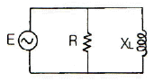
- 0.9
- 0.8
- 0.6
- 0.5
(정답률: 65%)
35. 다음 회로의 전압비 전달함수는?
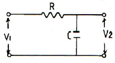
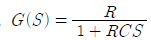
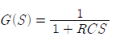
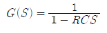
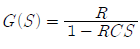
(정답률: 64%)
36. 반주기 동안 전형파 교류전압의 파형률은?
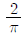
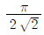
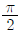
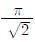
(정답률: 68%)
37. 함수 f(t)=A를 Laplace 변환하면?
- A
- A/s
- As
- 1
(정답률: 77%)
38. 자기 인덕턴스 L1, L2가 각각 4[mH], 9[mH]인 두 코일이 이상결합(理想結合)되었다면 상호 인덕턴스 M은?
- 6[mH]
- 6.5[mH]
- 9[mH]
- 36[mH]
(정답률: 68%)
39. 그림과 같은 회로에서 t=0에서 스위치 S를 닫으면서 전압 E[V]를 가할 때, L 양단에 걸리는 전압 VL[V]은?
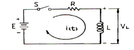
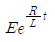
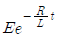
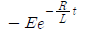
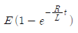
(정답률: 66%)
40. 분포 정수 회로에서 위상 정수가 β라 할 때 파장(λ)은?
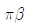
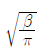
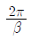
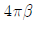
(정답률: 68%)
3과목: 전자계산기일반
41. 부동소수점의 나눗셈 과정에서 필요없는 연산은?
- 정규화
- 지수 조정
- 지수 뺄셈
- 가수 나누기
(정답률: 64%)
42. 컴퓨터 내부의 클록 펄스는 초당 반복하는 펄스의 수로 표시된다. MHz는 펄스가 초당 몇 회 반복되는가?
- 104
- 105
- 106
- 107
(정답률: 84%)
43. 드 모르간(De Morgan)의 정리를 옳게 나타낸 것은?
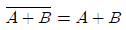
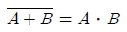
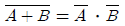
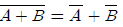
(정답률: 80%)
44. 주소지정 방식 중 오퍼랜드가 메모리상의 데이터 주소를 기억하고 그 주소에 기억되어 있는 데이터에 접근하는 방식은?
- 간접 주소지정 방식
- 상태 주소지정 방식
- 인덱스 주소지정 방식
- 즉시 주소지정 방식
(정답률: 54%)
45. 명령(instruction)의 형식에 있어서 연산수(주소의 개수)에 의한 분류시 해당되지 않는 것은?
- 1주소 방식
- 2주소 방식
- 3주소 방식
- 4주소 방식
(정답률: 78%)
46. 자바 언어에서 비트 연산자에 해당하는 것은?
- ++
- ==
- >>
- &&
(정답률: 57%)
47. 다음 기억장치들 중 접근시간(access time)이 가장 짧은 것은?
- RAM(random access memory)
- 자기 디스크(magnetic disk)
- 플로피 디스크(floppy disk)
- 자기 테이프(magnetic tape)
(정답률: 82%)
48. 기억장치로부터 명령이나 데이터를 읽을 때 제일 먼저 하는 동작은?
- 명령어 해독
- 명령어 실행
- 어드레스 증가
- 어드레스 지정
(정답률: 62%)
49. 좋은 해싱 함수(hashing function)의 조건으로 옳지 않은 것은?
- 항상 일정한 키 값을 가져야 한다.
- 충돌이 적어야 한다.
- 주소계산이 너무 복잡하지 않아야 한다.
- 키 값을 주소 공간에 고루 분산시켜야 한다.
(정답률: 63%)
50. 제어 유니트(장치)에서 다음에 실행할 마이크로명령어의 주소를 가지고 있는 레지스터는?
- CBR
- CAR
- IR
- PC
(정답률: 71%)
51. 프로그램의 기본 단위가 택할 수 있는 여러 속성 중에서 일부를 선정하여 결정하는 행위는?
- 위치(location)
- 값(value)
- 개체(entity)
- 바인딩(binding)
(정답률: 72%)
52. 10진수 1234를 BCD 코드로 표현한 것은?
- 0001001000110100
- 1110110111001011
- 1001101001000000
- 0110010110100001
(정답률: 80%)
53. 그림에 보이는 동작을 하는 논리회로는?
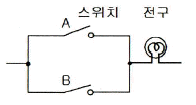
- NOR 논리회로
- AND 논리회로
- NOT 논리회로
- OR 논리회로
(정답률: 76%)
54. 멀티미디어 응용프로그램들의 실행을 좀 더 빠르게 할 수 있도록 설계된 것은?
- 비트 슬라이스 마이크로프로세서
- 배열 처리기
- MMX
- AMD
(정답률: 74%)
55. 컴퓨터의 모든 행위를 감시하고, 통제하는 일련의 거대한 소프트웨어의 집합체는?
- assembler
- compiler
- monitor
- operation system
(정답률: 73%)
56. 다음과 같이 C 언어로 PROGRAM을 수행하였을 때 출력으로 옳은 것은?
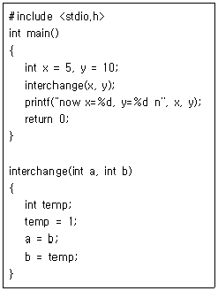
- now x=5, y=10
- now x=10, y=5
- now x=5, y=5
- now x=0, y=10
(정답률: 73%)
57. 다음은 컴퓨터 발전과정을 논리회로의 발단과정에 따라 나열한 것이다. 이 중 옳은 것은?
- 트랜지스터(TR) → LSI → IC → 진공관
- 진공관 → 트랜지스터(TR) → IC → LSI
- IC → 트랜지스터(TR) → 진공관 → LSI
- LSI → IC → 트랜지스터(TR) → 진공관
(정답률: 71%)
58. 다음 이진 트리를 postorder로 운행했을 때의 값은?
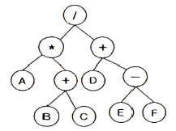
- ABC+*DEF-+/
- A+BC*DEF-+/
- /*A+BC+D-EF
- /A+BC*+D-EF
(정답률: 62%)
59. 묵시적 주소지정 방식에서 산술 연산을 실행하는데 사용되는 레지스터는?
- 데이터 레지스터
- 누산기
- 주소 레지스터
- 인덱스 레지스터
(정답률: 76%)
60. 중앙처리장치에서 마이크로 오퍼레이션이 순서적으로 처리되게 하려면 무엇이 필요한가?
- 스위치(switch)
- 레지스터(register)
- 누산기(accumulator)
- 제어 신호(control signal)
(정답률: 64%)
4과목: 전자계측
61. 그림과 같은 임피던스 브리지(Impedance Bridge)에서 LX의 값은?
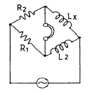
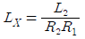
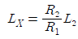
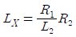
(정답률: 76%)
62. 계수형 주파수계는 피측정 주파수를 측정한 결과 1분동안 1800회이었다. 피측정 주파수는?
- 20[Hz]
- 30[Hz]
- 40[Hz]
- 50[Hz]
(정답률: 81%)
63. 디지털 주파수계를 설명한 것 중 옳지 않은 것은?
- 10진 계수회로가 필요하다.
- 입력 전압을 증폭하여 파형을 펄스형으로 바꾼다.
- 정확한 시간 기준으로서 수정 발진기가 필요하다.
- 입력 피측정파를 분석하기 위하여 진폭레벨에 의한 A/D 컨버터가 필요하다.
(정답률: 67%)
64. 다음 중 초단파대의 파장을 측정하는데 사용하는 것은?
- Q 미터
- P형 VTVM
- 레헤르(Lecher)선
- 휘스톤(Wheatstone)브리지
(정답률: 68%)
65. 그림의 발진기에서 발진 주파수를 낮추기 위한 방법은?
- R 증가 C 감소
- R 감소 C 증가
- RC의 감소
- RC의 증가
(정답률: 71%)
66. 다음 중 정현파 파형을 계수에 알맞은 직사각형 파형의 펄스로 바꾸는 역할을 하는 회로는?
- A/D 변환기 회로
- D/A 변환기 회로
- 파형 정형 회로
- 검파 회로
(정답률: 64%)
67. 다음 중 잡음에 대한 설명으로 옳지 않은 것은?
- AC 전원 도선이나 계기 결선과 같은 금속 도체를 통하여 회로는 반입되는 잡음을 전도 잡음(conducted noise)이라 한다.
- 전류를 운반하는 자유전자의 열적 동요로 야기되는 잡음을 존슨 잡음(Johnson noise)이라 한다.
- 전기나 전자회로에서 필요한 전류, 전압 외의 신호를 말한다.
- 내부 잡음이 없는 경우의 이상적인 잡음지수는 0이다.
(정답률: 62%)
68. 소인 발진기(sweep oscillator)의 용도가 아닌 것은?
- 광대역 증폭기의 조정
- 주파수 변별기의 측정 및 조정
- 수신기의 중간주파 증폭기의 특성 측정 및 조정
- 순시 주파수 편이 제어 회로(IDC) 측정 및 조정
(정답률: 54%)
69. 다음 중 링 시료법은 무엇을 측정하는데 사용되는가?
- 자화곡선
- 접지저항
- 위상
- 정전용량
(정답률: 71%)
70. 참값이 100[A]인 전류를 측정하였더니 110[A]의 전류가 측정되었다. 이 경우 보정률은 약 얼마인가?
- -0.01
- -0.04
- -0.06
- -0.09
(정답률: 66%)
71. 다음 중 오실로스코프의 동기방법이 아닌 것은?
- 내부 동기
- 외부 동기
- 트리거 동기
- 전원 동기
(정답률: 73%)
72. 가동 코일형 계기의 설명 중 옳지 않은 것은?
- 직류 전용이다.
- 소비 전력이 대단히 적다.
- 감도가 대단히 우수하다.
- 평등눈금이지만 만능계기로 적용되지 못한다.
(정답률: 68%)
73. 디지털 볼트 미터(DVM)의 분류 방식 중 옳지 않은 것은?
- 추종 비교 방식
- 부호판 변환 방식
- 전압-주파수 변환 방식
- 미분 방식
(정답률: 48%)
74. 오실로스코프를 사용하여 측정이 불가능한 것은?
- 전압
- coil의 Q
- 주파수
- 변조도
(정답률: 83%)
75. 다음 그림과 같은 파형이 전류를 열전형 전류계로 측정한 결과 20[A]였다. 이것을 가동 코일형 전류계로 측정하면 지시 값은?
- 0.141[A]
- 1.414[A]
- 14.14[A]
- 18.14[A]
(정답률: 69%)
76. 최대 눈금 50[mV], 내부 저항 10[Ω]의 직류 전압계에 배율기를 사용하여 3[V]의 전압을 측정하려면 배율기의 저항은 몇 [Ω]으로 하여야 하는가?
- 500
- 590
- 600
- 690
(정답률: 71%)
77. 다음 중 교류브리지의 종류가 아닌 것은?
- Wheatstone bridge
- Wien bridge
- Maxwell bridge
- Schering bridge
(정답률: 64%)
78. 서보 모터를 사용하는 기록 계기는?
- 타점식
- 펜식
- 자동평형식
- 직동식
(정답률: 78%)
79. 다음 중 고주파 전력 측정에 이용되는 것은?
- 볼로미터
- 딥미터
- 캠벨 브리지법
- 홀 발진기
(정답률: 70%)
80. 디지털 계측에서 A-D 변환기의 분류방식이 아닌 것은?
- 전압-주파수 변환 방식
- 전압-시간 변환 방식
- 전압-전류 변환 방식
- 수치 비교형
(정답률: 57%)